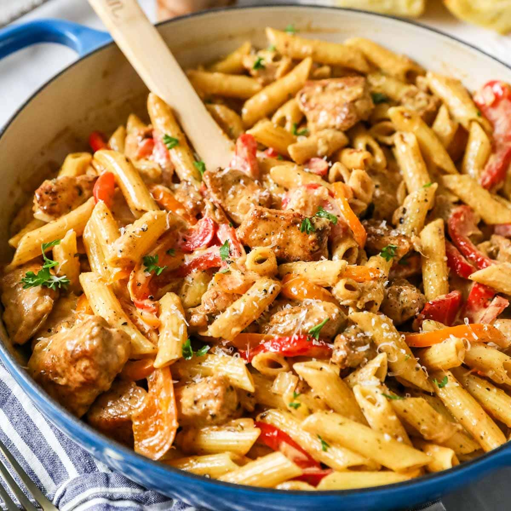

Cajun Chicken Pasta

Description
Looking for a quick, easy pasta dish for those nights you're hovering your finger over the Submit Order button on DoorDash? I feel you. One night many moons ago, I was fully prepared to pay double the menu price for my favorite pasta from Chili's. This is when I stopped, thought to myself What am I doing?, and decided I could make this dish myself. Turns out it's super easy! (No shade Chili's - you guys are still the GOAT).
This pasta whips up in about 30 minutes (or 45 if you dilly dally in the kitchen like me), only requires ingredients that you usually already have on hand, is all cooked in one pan (!!!), and totally satisfies that late-night pasta craving. Once I learned how to make this dish, I couldn't stop. Seriously. There were weeks that cajun chicken pasta was on the menu three, four, or even five times a week in my humble abode. Maybe I'm crazy, or maybe the pasta is just that good! Try it for yourself and let me know!
Ingredients
Treat this list as somewhat of a guideline. Mess around with the quantities of each ingredient, substitute some ingredients for a similar item that you might prefer, add new ingredients; whatever your pasta-loving heart desires!
- 250g (8oz) penne pasta (or a pasta of your choosing)
- 2 chicken breasts, cut into small pieces (or frozen shredded chicken - we don't judge here)
- 1 tbsp cajun seasoning
- 1 tbsp butter
- 1 tbsp cooking oil of choice
- Salt and pepper, to taste
- 1 small onion, diced (or chopped into weird little pieces - my personal method)
- 3 cloves garlic, minced (or a hefty amount of jarlic)
- 1 bell pepper, sliced (red, green, yellow, or your favorite combo!)
- 1/2 cup chicken broth
- 1 cup heavy whipping cream
- 1/2 cup grated parmesan
- Fresh parsley for garnish
Steps
- Cook your pasta until al dente, according to the instructions listed on the box. Reserve 1/2 cup of pasta water, drain pasta, and set aside.
- Evenly coat your chicken in the cajun seasoning, salt, and pepper.
- Add your cooking oil to a large skillet (or pot or pan if that's more your jam) over medium-high heat.
- Once the oil is hot, add the chicken and cook for 5-7 minutes. Stir the chicken halfway through to ensure even cooking. Remove from skillet and set aside.
- If using frozen chicken, cook according to the package instructions.
- In the same pan, add the butter, onion, garlic, and peppers. Sauté for 2-3 minutes or until the contents are to your liking (and your kitchen smells heavenly).
- Pour in the chicken broth, making sure to scrape any pieces stuck to the bottom (arguably the best-tasting pieces). Let simmer for 1-2 minutes.
- Stir in the heavy cream and parmesan cheese, then let simmer gently for 2-3 minutes.
- Once the sauce is thick and creamy, stir in the cooked pasta and chicken to evenly coat each delicious bite into the sauce. If the sauce is too thick, add a splash of the pasta water we kept from earlier and stir.
- Remove from heat and sprinkle your parsley on top to finish off your dish! If you're feeling extra cheesy, feel free to add some more cheese to top it off!
- Optional: eat all the pasta in one sitting!
Back to Home